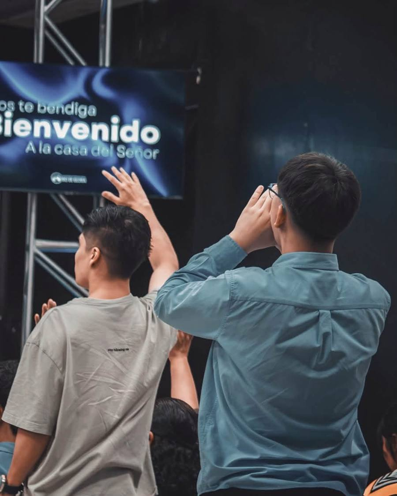
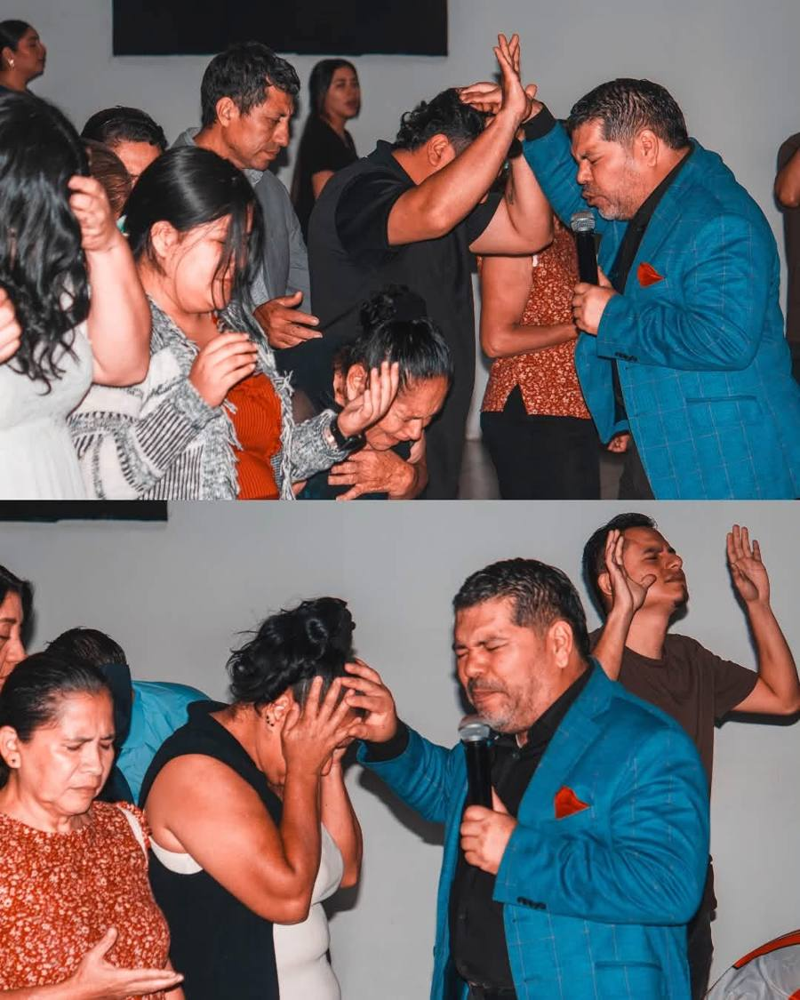
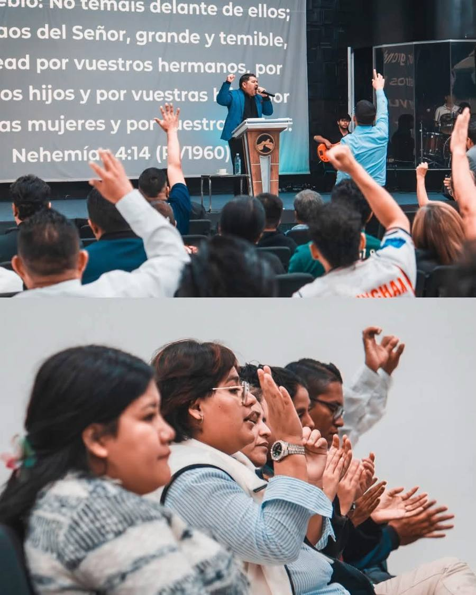
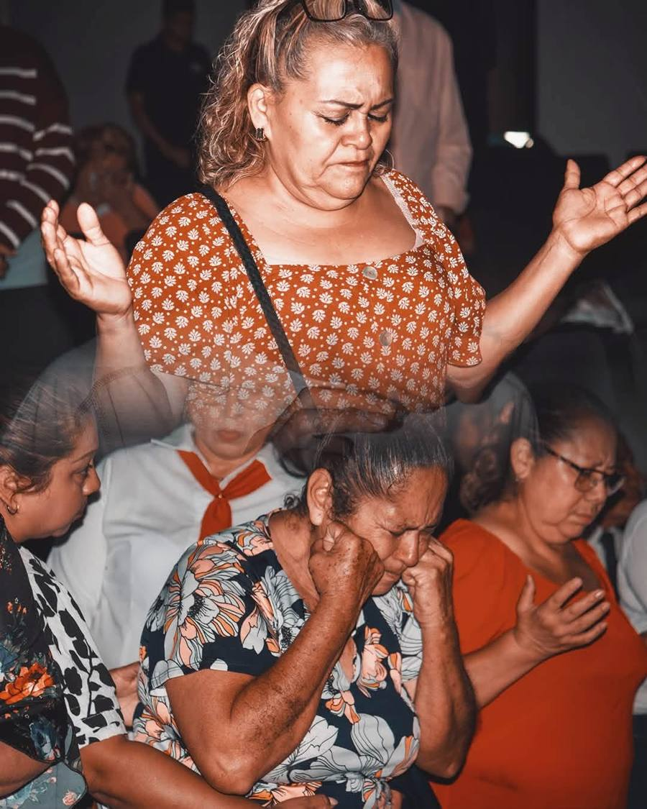
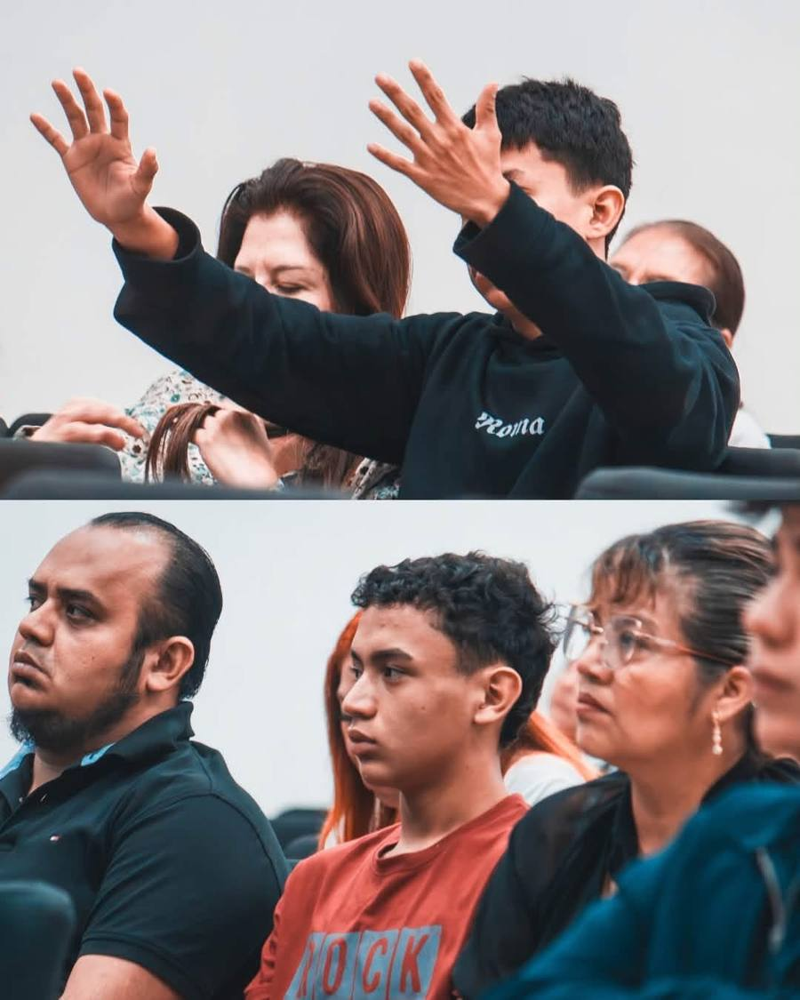

Qué vivirás
Así son nuestros domingos
Alabanza y adoración
Cantamos juntos con nuestro equipo de alabanza. Te recibimos con una bienvenida cálida desde que llegas.
La Palabra
Nuestro pastor predica un mensaje de la Biblia, con los pasajes en pantalla para que puedas seguirlo.
Oración y ministración
Un tiempo para orar unos por otros y recibir oración personal.
Galería
Momentos de un domingo





Te esperamos este domingo
19 Calle Poniente, entre 1 y 3 Avenida Norte, #232. Barrio San Miguelito, San Salvador.